Pastitsio Greek Lasagna

~ raw, vegan, gluten-free ~
This is a teaching and technique recipe. So please be sure to thoroughly read the post from top to bottom before you dive in or get scared by the length of what I shared. :) Let’s get started…
Pastitsio
Traditionally this dish is made of layers of ground meat sauce, cheese, noodles, and béchamel. My new modern take on it (my take) doesn’t use ANY of those ingredients. You kind of affect to laugh at that.
I am trying to replicate an old time cooked recipe into a something equally as delicious without using any of the traditional ingredients. How does one go about that? Carefully, along with the help of lots of praying and pleading.
I have to admit, I have never had the opportunity to try this dish with its cooked traditional flavors, so it took me quite some time to research and understand each and every ingredient used.
If you don’t mind, I am going to share everything that I learned with you. That way, you can understand where my inspiration came from. You may be asking yourself why I went through all of this to recreate a dish I’ve never eaten. One of our fellow members, Briggetgoble, an actual me to convert one of her husband’s favorite cooked dishes into a raw, healthier version.
The process of converting a complex recipe seems long and possibly overwhelming… let me encourage you… in fact, the cooked process is long and overwhelming, but the upside to my recipe is that you won’t be consuming store-bought, gluten-free, heavily processed noodles, nor will you be partaking of any animal products. Just take it one step at a time. I am with you ALL the way. And keep in mind… it is my heart to teach you! And this recipe will teach you many wonderful techniques as you grumble your way through them. hehe
Also, keep in mind you can make the white sauce, meat sauce, and cheese days in advance if this helps you. In fact, these ingredients will even taste better because they will have the extra time to develop deeper flavors.
Béchamel Sauce:
I find dairy-based recipes fairly easy to replicate. To mimic the creaminess of the cooked version, I used soaked cashews that were blended to an ultra-smooth consistency. The soaking process also helps to reduce the phytic acid levels, so it’s a win-win situation.
To develop the rich flavor I used coconut amino, nutmeg, garlic, onion, and a few other spices. If you don’t have coconut amino, you use Braggs amino, Tamari, or any other soy sauce substitute.
Béchamel doesn’t have a strong cheesy flavor but to replicate the slightest hint of it; I used non-GMO, non-fortified nutritional yeast.
You will end up with extra sauce, use it later in the week to create raw mac n’ cheese or fettuccine Alfredo with Zucchini noodle. You can thin the sauce by adding a little almond milk or water.
Pastitsio Noodles:
This one took a little (a lot) of head-scratching-deep-thought-rack-my-brain thinking. How do you make a raw food cylinder-shaped noodle? A straw? A cookie-cutter? Is there any other ingredient or technique that I am missing?! After a while, I was beginning to wonder if I was over-thinking the process.
After tossing and turning during a sleepless night encounter, I came up with the idea to wilt thin slices of yellow squash, and then roll them into tubes.
To wilt the squash, you slice it nice and thin, then salt it to draw out the water. This process mimics the texture and appearance of the cooked noodle. Minus all the calories, carbs, gluten, and over-processing. I was very pleased with the outcome.
Kasseri Processed Cheese:
Since I haven’t ever experienced the taste of Kasseri cheese, I had to spend a few hours Googling an assortment of different chef’s take on the flavor and texture of this cheese. After reading endless descriptions, I closed my eyes and did my best to find the taste. The imagination is a powerful tool but it really doesn’t take the place of a true experience.
It’s a hard cheese that melts. I knew I wasn’t going to come up with a raw cheese without a few months of experimenting so I created a soft cheese that would spread, taking on the appearance of being melted when the dish was served.
Naturally, instead of dairy, I used soaked cashews. I then cultured it with probiotics to get that cheesy tang (and added a powerhouse of nutrients). I then seasoned it the best I could according to flavor descriptions.
Meat Sauce:
Instead of tomatoes, I used pumpkin puree to make it nightshade-free. Trust me, it tastes amazing! If need be you can always replace the pumpkin with a tomato sauce or even mashed sweet potatoes, be adventurous. :) I wanted to show you how to think outside of the box, or in this case, outside of the tomato.
For a ground beef replacement, I used mushrooms and sunflower seeds, which gives it not only a meaty appearance but also a meaty flavor and texture. Walnuts also work well, but I was aiming to cut down on the use of nuts.
I brought over many of the spices that were used in the cooked version, added the sauce… then “cooked” it in the dehydrator to bring out the richness of the flavors as well as giving it a cooked appearance. This “meat” sauce was perfectly balanced in flavor.
Both Bob and I were very pleased with the outcome. Plating it right out of the dehydrator is just heavenly. Bob kept coming back to me letting me know that it left a pleasant aftertaste in his mouth. I should share that the cheese and Bechamel recipe make more than what is needed, but the added benefit of that is you can use it throughout the week for other meals. Enjoy and please leave a comment below.
ευλογίες (blessings in Greek), amie sue
Dish yields 13.75 x 4.33-inch Springform pan
Cultured Cheese: yield 2 1/2 cups
- 1 1/2 cups (112 g) cashews, soaked
- 3/4 cup (165 g) water
- 1 probiotic capsule (emptied)
Fettuccine noodles:
- 4 large (2.5 lbs or 1.171 kg) yellow squash, peeled
Meat Sauce: yields 2 1/2 cups
- 1 lb (454 g) baby portobello (crimini) mushrooms, stems removed
- 1/4 cup (40 g) sunflower seeds, soaked & dehydrated
- 1 Tbsp (10 g) onion powder
- 1 tsp (1 g) dried oregano
- 1/2 tsp (3 g) Himalayan pink salt
- 1/4 tsp (1 g) black pepper
- 1 cup (253 g) raw pumpkin puree or canned
- 1/4 cup (52 g) beet juice
- 1 Tbsp (13 g) raw coconut crystals
- 1/4 cup (52 g) raw apple cider vinegar
- 1/2 tsp (2 g) garlic powder
- 1 tsp (3 g) Ceylon cinnamon
- 1/8 tsp (>1 g) ground clove
- 1 tsp (2 g) Italian seasoning
- 1 tsp (3 g) dried minced onion
- 1/2 tsp (2 g) black pepper
- 1/2 tsp (2 g) psyllium husk powder
Béchamel White Sauce: yields 1 1/4 cups
- 1 cup (140 g) cashews, soaked 2+ hours
- 1/2 cup (108 g) water or almond milk
- 1 small clove garlic or 1/8 tsp (<1 g) garlic powder
- 2 Tbsp (20 g) olive oil
- 1 Tbsp (10 g) coconut amino
- 1 Tbsp (3 g) nutritional yeast
- 2 Tbsp (16 g) onion granules
- 1/2 tsp (3 g) Himalayan pink salt
- 1/8-1/4 tsp (2 g) freshly grated nutmeg
- 1/4 tsp (2 g) white or black pepper
Cheese:
- After the cashews have soaked for 2+ hours, drain and discard the soak water.
- In a high-powered blender combine the; cashews and water. Blend until creamy and smooth.
- Blend until the batter is creamy smooth. You shouldn’t detect any grit. If you do, keep blending.
- This process can take 2-4 minutes, depending on the power of the blender. Keep your hand cupped around the base of the blender carafe to feel for warmth. If the batter is getting too warm. Stop the machine and let it cool. Then proceed once cooled.
- Once you have a smooth texture, empty the contents of the probiotic capsule in the blender and blend until the powder is mixed in.
- Pour into a glass bowl, cover with a cloth and let it sit overnight to culture.
- Place the cheese in a warm location to ferment for 8-72 hours. If temperatures are too cold, it inhibits incubation.
- Keep in mind there is no hard and fast rule about how long it needs to culture. Your taste buds will have to guide you in determining the right length of time.
- The warmer the house, the faster it will ferment.
- Start taste testing around the 6-hour mark. I did mine for 24 hours with a house temp of 70 degrees.
- To speed up the process place in the dehydrator set at 115 degrees (F) until it reaches the right level of tang for you.
- Once it has cultured add the remaining ingredients except for the olive oil. Once everything is well mixed, with the machine running, drizzle in the oil until incorporated.
- Set aside for assembly.
Yellow squash noodles:
- Wash and peel the outer skin off of the squash. Compost peeling.
- I find the sided tray creates a tougher chew, that is why I remove it.
- Hold it at one end and in a long stroke motion, run the squash down the blade of the mandolin. I set mine at 1/8″ (3.1mm)
- If the centers are really wet, only slice them until you hit the center, then do the other side, and don’t use the remaining centers. You will need extra squash if you do this.
- After making your noodles, place them flat on a sided-tray and sprinkle salt in between each layer. This will help to draw out the water and make them softer.
- Let them rest for at least 1 hour… the longer they sit with the salt, the softer they get.
- To know when they are done, roll part of one up and taste it, see if it is the right texture for you.
- When ready to use, place each one in between two sheets of paper towel to press out the extra fluids and extra salt.
- While these are “sweating” start the meat sauce.
Meat Sauce:
- Pulse the mushrooms in the food processor, fitted with the “S” blade. It should break down to the size that resembles ground beef. Place in a large bowl.
- In a spice grinder combine the sunflower seeds, onion powder, oregano, salt, and black pepper. Grind long enough for the sunflower seeds to break down to a powder and toss the mushrooms and seasoning together.
- In the blender combine; pumpkin puree, beet juice, coconut crystals, apple cider vinegar, salt, garlic powder, cinnamon, clove, minced onion, black pepper, and psyllium husk powder. Blend until smooth.
- If you are not able to locate fresh sugar pumpkins and if you are ok with it, you can use canned. Be sure to get organic, BPA free pumpkin puree without any other added ingredients.
- The psyllium is added to thicken the sauce a bit and is healthy for the colon, but if you don’t have any, you can omit it.
- Add the sauce to the bowl, mixing well. Spread out on a dehydrator tray, lined with a non-stick sheet.
- Warm at 145 degrees (F) for about 30 mins. remove and stir, then slide back in for another 30 minutes.
- The mushrooms will darken, this is normal.
- This process is done to soften the mushrooms and to help all the flavors meld. It’s equivalent to simmering the meat sauce to develop that rich flavor.
Béchamel White Sauce:
- After soaking the cashews, drain and rinse them.
- In the blender combine the; cashews, garlic, olive oil, coconut aminos, nutritional yeast, onion granules, salt, nutmeg, and white pepper.
- Coconut aminos is a substitute for soy sauce. So feel free to use; Braggs aminos, Tamari, etc.
- A couple of teaspoons of white chickpea miso is good to add if you have it. I wanted to add it but didn’t have any.
- Once creamy, pour into a bowl, and set aside.
_______________________________________________
Ok… SHEW! The cheese is chilling, the noodles are “slow cooking” to a nice “al dente”, the meat sauce is “cooking down in rich flavors, and the Béchamel white sauce is ready to go. Go ahead, take a break. Your doing wonderful! When you are ready, let’s start assembling this masterpiece!
_______________________________________________
Assembly:
- Have the baking dish or Springform pan, béchamel sauce and squash slices around you.
- I used a Springform pan as it is much easier to cut and serve. If you use a standard baking dish, you will need to scoop the lasagna out which will be a sloppier scoop, but that won’t affect the flavor in the least. :)
- Take each slice of zucchini, placing it in front of you.
- Have the largest end closest to you.
- Dip your finger in the béchamel sauce and wipe it on the zucchini slice, concentrating on the end furthest from you. This will add some flavor but also act as a glue to hold the zucchini together after rolling it.
- Roll the zucchini slice into a tube and tuck it in the base of the baking pan. Line them up according to size, making sure you fill in all gaps.
- Spread a layer of cheese sauce on top.
- Spoon on the “meat” mixture on top and with your fingers, gently add more, filling in the gaps. Don’t use a spoon or anything to spread it otherwise, it will get muddled with the cheese sauce. Create an even layer.
- Add another layer of cheese on top.
- Add another layer of rolled noodles on top, just like you did on the very bottom.
- Top with the Béchamel sauce and swirl in with a little extra cheese sauce.
Dehydrate:
- Slide into the dehydrator at 145 degrees (F) for 1 hour, then reduce to 115 degrees (F) for 1-2 hours to warm it all the way through.
- Serve right away. Toss some minced herbs on top for color and an extra kick of flavor.
- If you use a Springform pan, be aware that it will eventually start sliding off the edges.
Culinary Explanations:
- Why do I start the dehydrator at 145 degrees (F)? Click (here) to learn the reason behind this.
- When working with fresh ingredients it is important to taste test as you build a recipe. Learn why (here).
- Don’t own a dehydrator? Learn how to use your oven (here). I do however truly believe that it is a worthwhile investment. Click (here) to learn what I use.
Cultured Cheese:
-
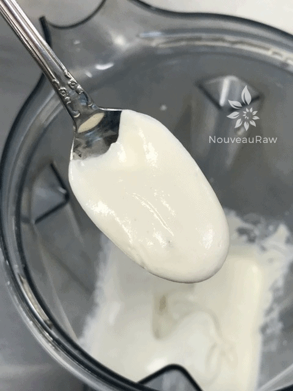
-
Be sure to blend until ultra-smooth and creamy before adding the probiotics.
-
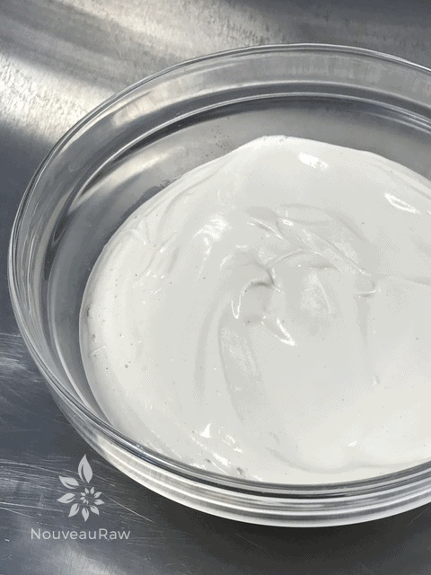
-
Pour into a glass bowl and leave on the counter to culture.
-
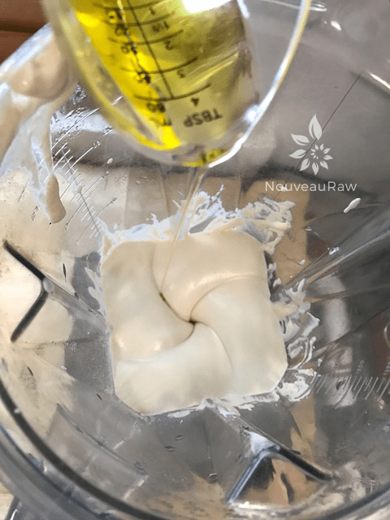
-
After culturing add the remaining ingredients, making sure to drizzle in the coconut oil while it blends.
-
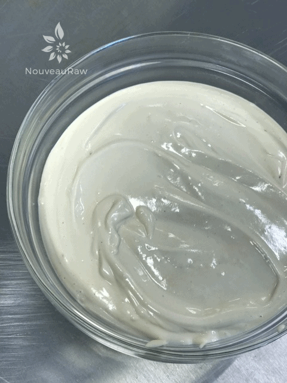
-
Pour into a bowl and set aside.
“Meat” Sauce
-
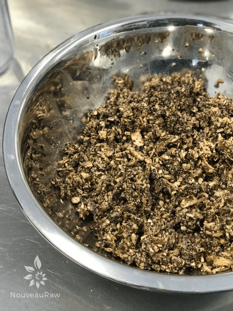
-
Be sure that you don’t over-process the mushrooms, it should resemble ground hamburger, not a pate.
-
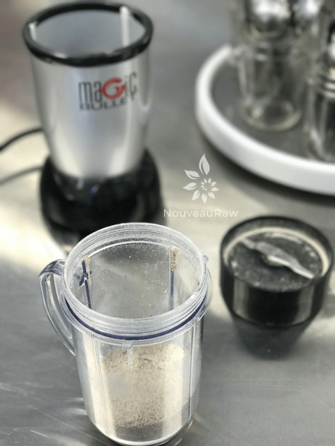
-
In the Bullet or coffee grinder, powder the sunflower seeds along with the dry spices.
-
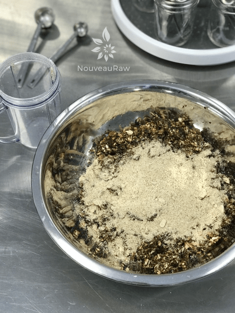
-
Sprinkle over the mushrooms and with your hands, toss everything together.
-
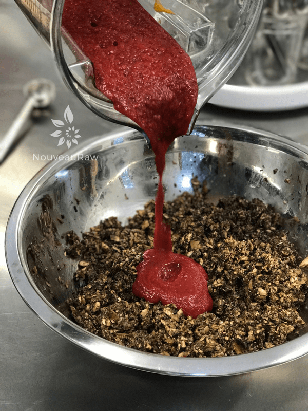
-
After blending the “meat” sauce, pour over the mushroom mixture.
-
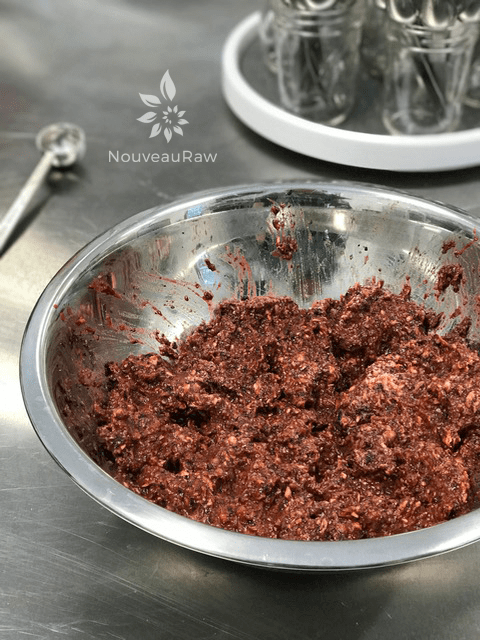
-
Again, with your hands, mix everything together.
-
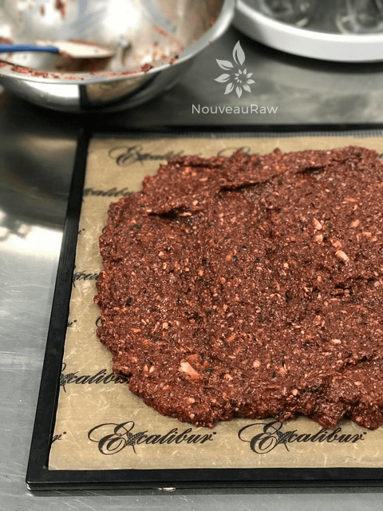
-
Spread the mixture on a non-stick dehydrator sheet.
-
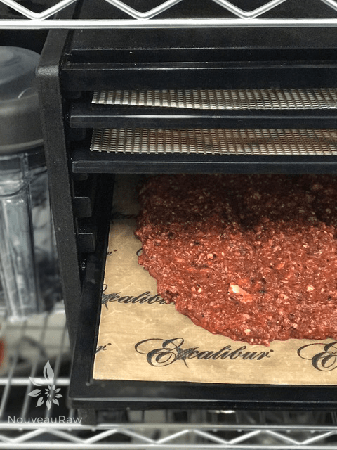
-
Slide into the dehydrator for 60 minutes, stirring it at the 30 minute marker.
-
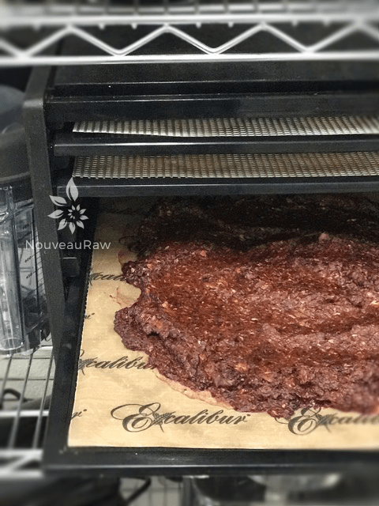
-
It darkens and the flavors meld together.
-
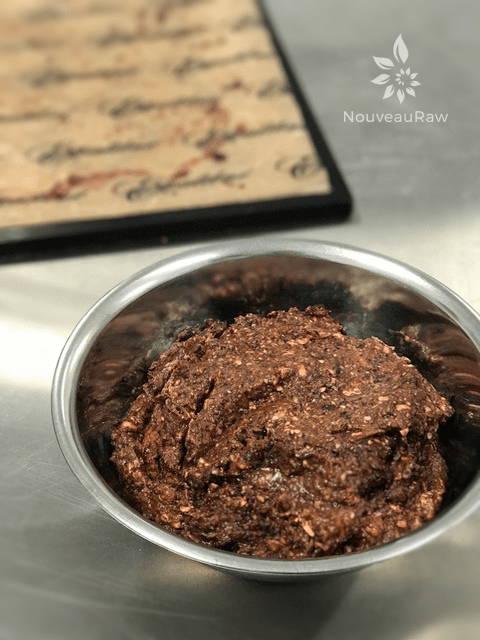
-
Scoop out and set aside for assembly.
Béchamel White Sauce
Assembly:
-
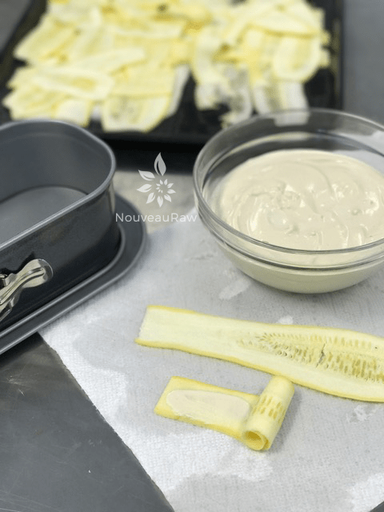
-
Dry each squash slice, tab with some bechamel sauce, and roll tightly without breaking it.
-
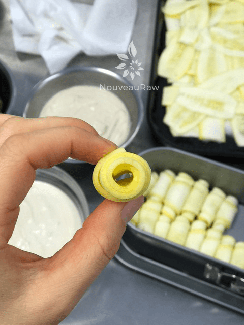
-
This is about as tight as I could get mine.
-
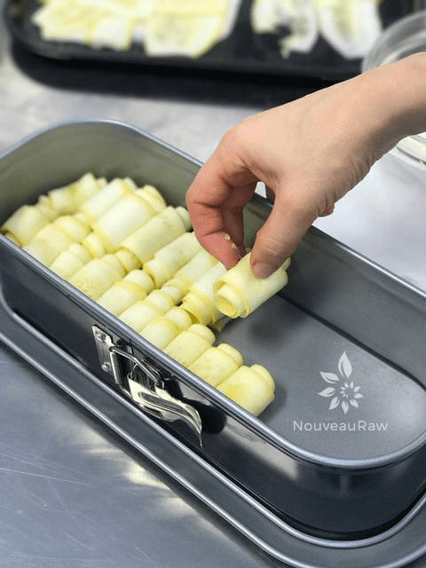
-
Line them up nice and snug into the pan.
-
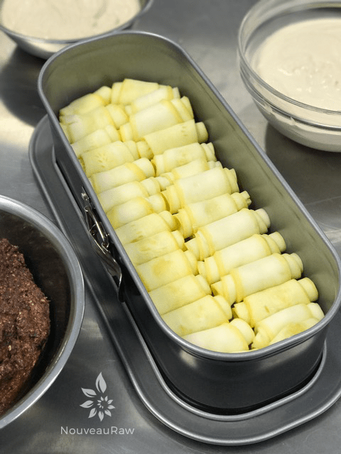
-
This is what layer #1 looks like.
-
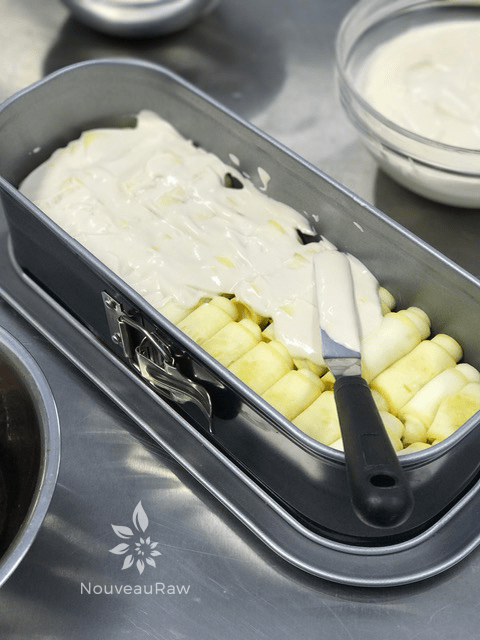
-
Spread some cheese on top.
-
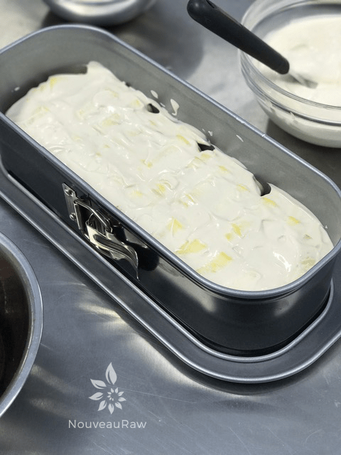
-
Don’t make it too thick, but you can decide on that. :)
-
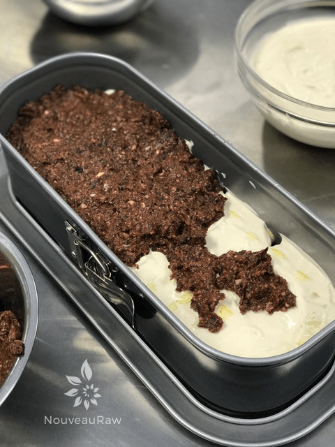
-
Drop the “meat” sauce on top of the cheese layer and wth your hands fill it in. Don’t spread it or it will muddle with the cheese to much.
-
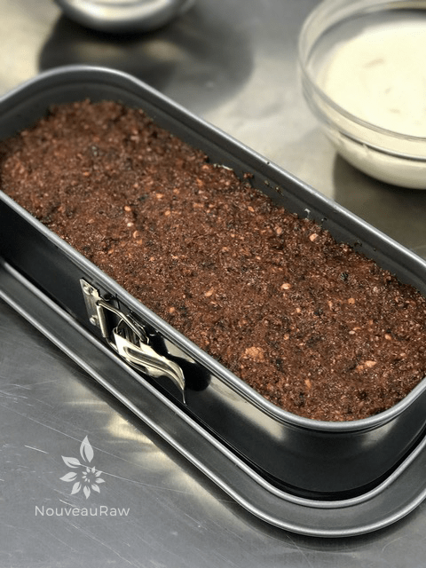
-
Create an even layer.
-
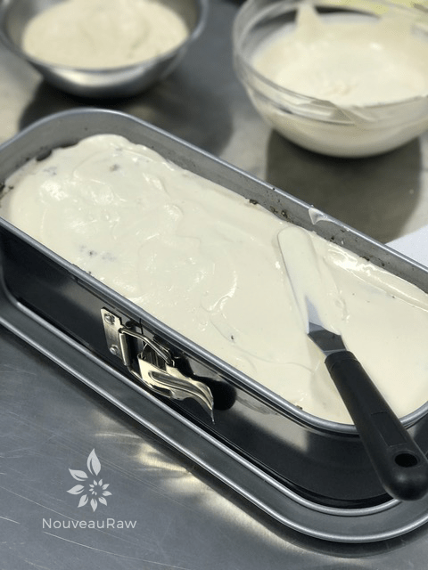
-
Add another layer of cheese sauce.
-
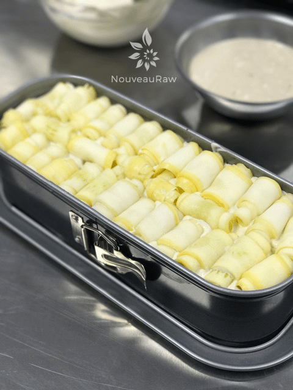
-
Followed by another layer of noodles.
-
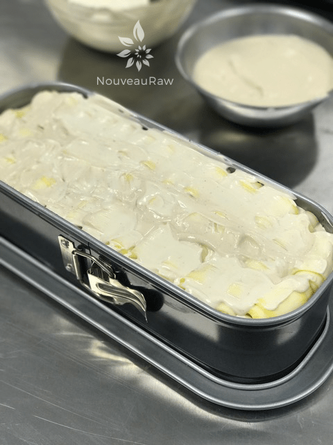
-
And yet again, followed by another mixed layer of cheese and bechamel sauce.
-
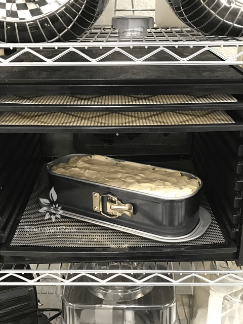
-
Pop it in the dehydrator at 145 degrees (F) for 1 hour, decrease to 115 degrees for 1-2 more hours.
Ready to Serve!
© AmieSue.com